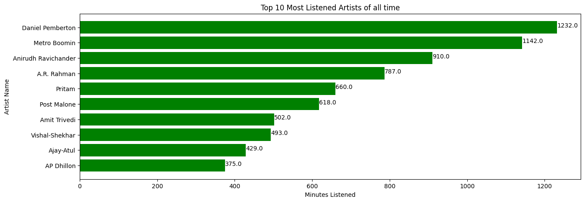
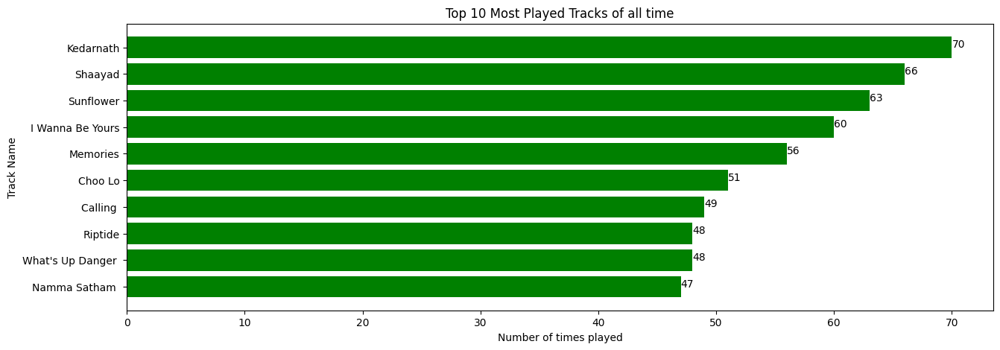
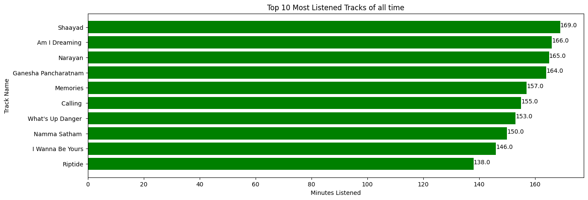
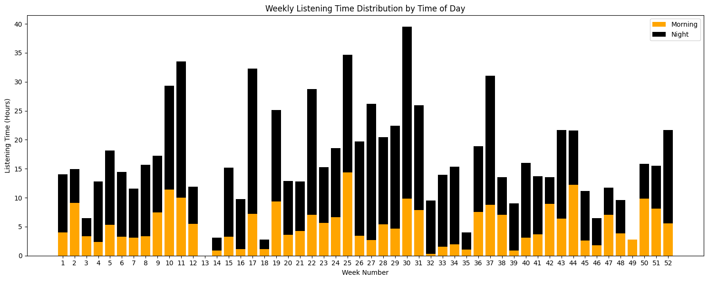
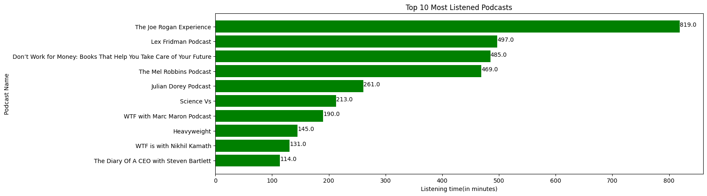

Introduction
Recently I came across an HN post and I was amazed to know that Spofity does provide our streaming data. It got me all worked up and I also wanted to see what my listening pattern looked like. What did I listen to the most? So without further wasting a millisecond I logged into my Spotify account and requested for it. You can request yours by heading over to : spotify's privacy page.
Note: To get lifetime of your data select the checkbox for Extended streaming History
Two days ago, I received this mail from spotify, that my requested data has been prepared and is ready to download.

Data Overview
The Zipped file that I received contained following files, this is my streaming data of last year, the extended version of the data is still being prepared and will arrive soon.
-rw-r--r-- 1 dell 197609 81 Feb 16 14:38 Follow.json
-rw-r--r-- 1 dell 197609 78 Feb 16 14:38 Identifiers.json
-rw-r--r-- 1 dell 197609 148 Feb 16 14:38 Identity.json
-rw-r--r-- 1 dell 197609 16094 Feb 16 14:38 Inferences.json
-rw-r--r-- 1 dell 197609 82759 Feb 16 14:38 Marquee.json
-rw-r--r-- 1 dell 197609 2 Feb 16 14:38 Payments.json
-rw-r--r-- 1 dell 197609 200468 Feb 16 14:38 Playlist1.json
-rw-r--r-- 1 dell 197609 672409 Feb 16 14:38 Read_Me_First.pdf
-rw-r--r-- 1 dell 197609 51572 Feb 16 14:38 SearchQueries.json
-rw-r--r-- 1 dell 197609 1420974 Feb 16 14:38 StreamingHistory_music_0.json
-rw-r--r-- 1 dell 197609 1405227 Feb 16 14:38 StreamingHistory_music_1.json
-rw-r--r-- 1 dell 197609 446850 Feb 16 14:38 StreamingHistory_music_2.json
-rw-r--r-- 1 dell 197609 38384 Feb 16 14:38 StreamingHistory_podcast_0.json
-rw-r--r-- 1 dell 197609 332 Feb 16 14:38 Userdata.json
-rw-r--r-- 1 dell 197609 38854 Feb 16 14:38 YourLibrary.json
The files we'll be focusing are StreamingHistory_music to analyzing what songs and StreamingHistory_podcast for podcasts that I played and listened to.
Insights
Songs
After performing the anlysis on the data available, I found out the following things:
Podcasts
Analysis
Let's see some code and graphs to understand how I made these conclusions above, shall we? For the sake of the this analysis, I've used python for visualization on jupyter notebook. You can find the code in this tutorial in this repo
I wanted to make sure about the time zone at which this data was recorded, so I contacted the spotify support. The team replied, the data is recorded in UTC timezone. To convert it into my local timezone i.e. IST, I had to add 5.5 hours to it.
df['endTime'] = pd.to_datetime(df['endTime']) + pd.Timedelta(hours=5.5)
Now we are in IST. Feels pretty good.
Listening Time Distribution over time
# Extract date from 'endTime' column
df['date'] = df['endTime'].dt.date
# Group the data by date and calculate total listening time for each date
daily_listen_time = df.groupby('date')['msPlayed'].sum() / (1000 * 60 * 60)
# 1000 * 60 * 60 to convert ms to hours
# Plot the time series
plt.figure(figsize=(12, 6))
daily_listen_time.plot(color='green')
plt.xlabel('Date')
plt.ylabel('Listening Time (Hours)')
plt.title('Total Listening Time Over Time')
plt.grid(True)
plt.tight_layout()
plt.show()

My Top 10 Most Played Artists of All Time
artist_data = df.groupby('artistName').agg({'artistName': 'size', 'msPlayed': 'sum'})
artist_data.columns = ['play_count', 'total_listen_time_ms']
artist_data['total_mintutes_listened'] = artist_data['total_listen_time_ms']/(1000*60)
Most_played_artists = pd.DataFrame(artist_data.sort_values(by = 'play_count',ascending = False)['play_count'])
plt.figure(figsize = (15,5))
plt.barh(Most_played_artists.head(10).index,Most_played_artists.head(10).play_count,color = 'green')
plt.xlabel('Number of times played')
plt.ylabel('Artist Name')
plt.title('Top 10 Most Played Artists of all time')
for index, value in enumerate(Most_played_artists.head(10)['play_count']):
plt.text(value, index, str(value))
plt.gca().invert_yaxis() # Invert y-axis to display the artist with the highest play count at the top
plt.show()

My Top 10 Most Listened Artists of All Time
artist_data = df.groupby('artistName').agg({'artistName': 'size', 'msPlayed': 'sum'})
artist_data.columns = ['play_count', 'total_listen_time_ms']
artist_data['total_mintutes_listened'] = round(artist_data['total_listen_time_ms']/(1000*60))
Most_Listened_artists = pd.DataFrame(artist_data.sort_values(by = 'total_mintutes_listened',ascending = False)['total_mintutes_listened'])
plt.figure(figsize = (15,5))
plt.barh(Most_Listened_artists.head(10).index,Most_Listened_artists.head(10).total_mintutes_listened,color = 'green')
plt.xlabel('Minutes Listened')
plt.ylabel('Artist Name')
plt.title('Top 10 Most Listened Artists of all time')
for index, value in enumerate(Most_Listened_artists.head(10)['total_mintutes_listened']):
plt.text(value, index, str(value))
plt.gca().invert_yaxis() # Invert y-axis to display the artist with the highest play count at the top
plt.show()

My Top 10 Most Played Tracks of All Time
track_data = df.groupby('trackName').agg({'trackName': 'size', 'msPlayed': 'sum'})
track_data.columns = ['play_count', 'total_listen_time_ms']
track_data['total_mintutes_listened'] = artist_data['total_listen_time_ms']/(1000*60)
Most_played_tracks = pd.DataFrame(track_data.sort_values(by = 'play_count',ascending = False)['play_count'])
Most_played_tracks.index = map(lambda x: x.split('(')[0] , Most_played_tracks.index)
plt.figure(figsize = (15,5))
plt.barh(Most_played_tracks.head(10).index,Most_played_tracks.head(10).play_count,color = 'green')
plt.xlabel('Number of times played')
plt.ylabel('Track Name')
plt.title('Top 10 Most Played Tracks of all time')
for index, value in enumerate(Most_played_tracks.head(10)['play_count']):
plt.text(value, index, str(value))
plt.gca().invert_yaxis() # Invert y-axis to display the artist with the highest play count at the top
plt.show()

My Top 10 Most Listened Tracks of All Time
track_data = df.groupby('trackName').agg({'trackName': 'size', 'msPlayed': 'sum'})
track_data.columns = ['play_count', 'total_listen_time_ms']
track_data['total_mintutes_listened'] = round(track_data['total_listen_time_ms']/(1000*60))
Most_played_tracks = pd.DataFrame(track_data.sort_values(by = 'total_mintutes_listened',ascending = False)['total_mintutes_listened'])
Most_played_tracks.index = map(lambda x: x.split('(')[0] , Most_played_tracks.index)
plt.figure(figsize = (15,5))
plt.barh(Most_played_tracks.head(10).index,Most_played_tracks.head(10).total_mintutes_listened,color = 'green')
plt.xlabel('Minutes Listened')
plt.ylabel('Track Name')
plt.title('Top 10 Most Listened Tracks of all time')
for index, value in enumerate(Most_played_tracks.head(10)['total_mintutes_listened']):
plt.text(value, index, str(value))
plt.gca().invert_yaxis() # Invert y-axis to display the artist with the highest play count at the top
plt.show()

Hourly Listening Time
df['hour'] = df['endTime'].dt.hour
# Group the data by hour and calculate total listening time for each hour
hourly_listen_time = df.groupby('hour')['msPlayed'].sum() / (1000 * 60 * 60) # Convert ms to hours
# Plot the results with adjusted x-axis ticks
plt.figure(figsize=(15, 6))
bars = plt.bar(hourly_listen_time.index, hourly_listen_time, width=0.8, color='green')
# Adjust x-axis ticks to be in between the numbers
plt.xticks(np.arange(25) - 0.5, range(25))
plt.xlabel('Hour of the Day')
plt.ylabel('Listening Time (Hours)')
plt.title('Listening Time Distribution by Hour of the Day')
plt.grid(False)
plt.show()

Weekly Listening Pattern
def categorize_time(hour):
if hour < 12:
return 'Morning'
else:
return 'Night'
# Extract the week number from the 'endTime' column
df['week_number'] = df['endTime'].dt.isocalendar().week
# Extract the hour component from the 'endTime' column
df['hour'] = df['endTime'].dt.hour
# Categorize each listening session as morning or night
df['time_of_day'] = df['hour'].apply(categorize_time)
# Group the data by week number and time of day, and calculate total listening time for each category
weekly_listen_time_split = df.groupby(['week_number', 'time_of_day'])['msPlayed'].sum() / (1000 * 60 * 60) # Convert ms to hours
# Plot the results
plt.figure(figsize=(15, 6))
# Plot morning listening time
plt.bar(weekly_listen_time_split.unstack().index, weekly_listen_time_split.unstack()['Morning'], color='orange', label='Morning')
# Plot night listening time on top of morning listening time
plt.bar(weekly_listen_time_split.unstack().index, weekly_listen_time_split.unstack()['Night'], bottom=weekly_listen_time_split.unstack()['Morning'], color='black', label='Night')
plt.xlabel('Week Number')
plt.ylabel('Listening Time (Hours)')
plt.title('Weekly Listening Time Distribution by Time of Day')
plt.grid(False)
plt.xticks(range(1, 53))
plt.legend()
plt.tight_layout()
plt.show()

Monthly Listening Pattern
df['month'] = df['endTime'].dt.mon
# Group the data by month and time of day, and calculate total listenitime for each category
monthly_listen_time_split = df.groupby(['month', 'time_of_day['msPlayed'].sum() / (1000 * 60 * 60) # Convert ms to hours
# Plot the results
plt.figure(figsize=(15, 6))
# Plot morning listening time
plt.bar(monthly_listen_time_split.unstack().indemonthly_listen_time_split.unstack()['Morning'], color='orangelabel='Morning')
# Plot night listening time on top of morning listening time
plt.bar(monthly_listen_time_split.unstack().indemonthly_listen_time_split.unstack()['Night'bottom=monthly_listen_time_split.unstack()['Morning'], color='blacklabel='Night')
plt.xlabel('Month')
plt.ylabel('Listening Time (Hours)')
plt.title('Monthly Listening Time Distribution by Time of Day')
plt.grid(False)
plt.xticks(range(1, 13))
plt.legend()
plt.tight_layout()
plt.show()

Listening Pattern as per Date
# Extract the day of the month from the 'endTime' column
df['day_of_month'] = df['endTime'].dt.day
# Group the data by day of the month and time of day, and calculate total listening time for each category
daily_listen_time_split = df.groupby(['day_of_month', 'time_of_day'])['msPlayed'].sum() / (1000 * 60 * 60) # Convert ms to hours
# Plot the results
plt.figure(figsize=(20, 8))
# Plot morning listening time
plt.bar(daily_listen_time_split.unstack().index, daily_listen_time_split.unstack()['Morning'], color='orange', label='Morning')
# Plot night listening time on top of morning listening time
plt.bar(daily_listen_time_split.unstack().index, daily_listen_time_split.unstack()['Night'], bottom=daily_listen_time_split.unstack()['Morning'], color='black', label='night')
plt.xlabel('Day of the Month')
plt.ylabel('Listening Time (Hours)')
plt.title('Daily Listening Time Distribution by Time of Day')
plt.grid(False)
plt.xticks(range(1, max(df['day_of_month']) + 1))
plt.legend()
plt.tight_layout()
plt.show()

Most Listened Podcast
top_podcasts.columns = [ 'total_listen_time_ms']
top_podcasts['total_mintutes_listened'] = round(top_podcasts['total_listen_time_ms']/(1000*60))
plt.figure(figsize = (15,5))
plt.barh(top_podcasts.head(10).index,top_podcasts.head(10).total_mintutes_listened,color = 'green')
plt.xlabel('Listening time(in minutes)')
plt.ylabel('Podcast Name')
plt.title('Top 10 Most Listened Podcasts')
for index, value in enumerate(top_podcasts.head(10)['total_mintutes_listened']):
plt.text(value, index, str(value))
plt.gca().invert_yaxis() # Invert y-axis to display the artist with the highest play count at the top
plt.show()

Peak Podcast Listening Hours
podcasts['hour'] = podcasts['endTime'].dt.hour
# Group the data by hour and calculate total listening time for each hour
hourly_listen_time = podcasts.groupby('hour')['msPlayed'].sum() / (1000 * 60 ) # Convert ms to minutes
# Plot the results with adjusted x-axis ticks
plt.figure(figsize=(15, 6))
bars = plt.bar(hourly_listen_time.index, hourly_listen_time, width=0.8, color='green')
# Adjust x-axis ticks to be in between the numbers
plt.xticks(np.arange(25) - 0.5, range(25))
plt.xlabel('Hour of the Day')
plt.ylabel('Listening Time (minutes)')
plt.title('Podcasts - Listening Time Distribution by Hour of the Day')
plt.grid(axis='y', linestyle='--', alpha=0.7)
plt.show()

I know it is small and easy analysis but what it offeres is personalization as the data represented me, so I could see and verify how accurately the numbers can represent us. I recalled all the times I listened to those songs and podcasts. Although while working I tend to use youtube over Spotify. IMO everyone should try doing their own analysis and see through themselves.
This is it for this article, see you next time.